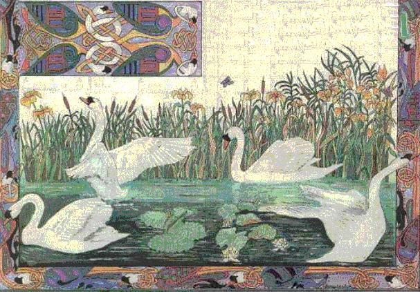

An Buachaill Bàn
The Fair-haired Lad
Le Pâtre blond
by Seàn O' Coileâin (John Collins) [1]
A disguised [2] Irish Jacobite Song
Tune 1"An Buachail Bàn 1"
Tune 2
"An Cailin Dhonn"
Tune 3
"An Buachail Bàn2"
Sequenced by Ch.Souchon
|
To the tunes:
The tune was recorded in the Belfast Northern Star of July 15th, 1792, as having been played by ten Irish harp masters at the last great harp convocation, the Belfast Harp Festival, held that week. The melody is a variant of the once-popular "Banks of Claudy." Related songs are "The Blackhaired Lass," "The Dark Gate Girl," and "The Dark Haired Girl." Source for notated [and sequenced] version is the 1861 manuscript collection of James Goodman, an Anglican cleric who collected primarily in County Cork. Source for these two tunes: Andrew Kuntz' Fiddler's Companion (see links) Source for this version: "Ceol Ar Sinseor", 1913. Contributed by M. Pádraig Cárthaigh. See also the Scottish Gaelic song Am Buachaille Buidhe . |
 |
A propos des mélodies:
Cette mélodie est citée pour la première fois dans le "Belfast Northern Star" du 15 juillet 1792: elle avait été jouée par 10 maîtres harpistes irlandais, lors du tutti final cloturant le festival de harpe de Belfast qui avait eu lieu cette semaine-là. Cette mélodie est une variante des "Rives de la Claudy" , morceau qui avait eu jadis son heure de gloire. Lui sont apparentés les chants: "La fille brune," "La fille de la Porte Noire," et "La fille aux cheveux sombres". La source de la version notée utilisée pour le séquençage est le recueil manuscrit de 1861 de James Goodman, un pasteur anglican dont le terrain de collecte principal fut le Comté de York. Source de ces deux morceaux: Andrew Kuntz: Fiddler's Companion (cf. liens) Source de cette version: "Ceol Ar Sinseor", 1913. Contributed by M. Pádraig Cárthaigh. See also the Scottish Gaelic song Am Buachaille Buidhe . |

|
1. As I lay one bright morning in the shadow
Of a green oak, alone, by the sea-shore Through my sleep I saw in a shining halo A sky-woman from the sea coming forth. Her fingers were, aye, as slender and narrow As the quill that runs on the writing pad And she said to me softly "Oh my sorrow, Say, have you seen my dear fair-haired lad?" 2. Her teeth were beautiful, soft was her white hand And down to her feet flowed her golden hair Her sad face was like the morning stars that send Their dim light to the world before the day. And on her alabaster skin the soft light Of the rising sun danced merry and glad. But a stream of bitter tears fell from her eyes As she lamented for her fair-haired lad. 3. I bent my head modestly in the presence Of this stately and gentle royal lass And I asked her in our old Gaelic parlance Her country, her family and her house "Are you the daughter of Gods, above dwelling Or a princess in godlike attire clad And who is the man for whom you are mourning? Who is this ill-fated, fair-haired lad?" 4. "Are you the hapless wife of gallant Hector [3] Who died in Troy, though he had won the fight. Or the graceful queen of outstanding pallor Who mourned Aeneas so much that she died? [4] Or the royal girl and the learned poetess Who with love to the god Pan had gone mad [5], Or the girl who jumped in the sea in distress That had engulfed her dear fair-haired lad? [6]" 5. "Are you above all the women of Ireland The star that stood out supreme and who cried By the side of the great Naoise, her husband Who in the midst of his enemies died? [7] The one who turned Lir's children into wild swans [8] That on the Moyle for long times swam so sad? The wife of the chief of the Red Branch Warriors Who died in the fight for her fair-haired lad?" [9]" 6. Said the woman of the fine hair "I'm none of Those that you said in your verse, but Ireland The Gael, in thrall to tyrannical Saxons, Who cries so bitterly for her brave man. And it's long abroad that is now my lover. Who from Eibhir and Mile the Gaels [10] had Descent, also from Conn of the Hundred Wars [11] This gallant man is my fair-haired lad." 7. "Stop that crying, eternal girl, don't sorrow And be happy, though it was for so long That your royal champion, your beloved hero Has stayed far from you in outlandish land. In all Europe there are now rising armies They will be soon with him around the strand He's drawing near with all these mighty forces That will save Ireland for your fair-haired lad." 8. When she heard this story, her gloom did vanish And she raised quickly her beautiful harp And her hands played a royal song, an anthem. That did not rejoice animals nor birds But it was indeed the woods and the mountains The rivers, the ponds, the rocks and the crags That were now dancing around all the fond Glens, To the tune she played for her fair-haired lad. Transcribed (from Engl. transl.) by Chr. Souchon [12] |
1. Maidin lae ghil fá dhuille géag-glais
daire im aonar cois imeall trá, i bhfís trím néaltaibh do dhearcas spéirbhean ag teacht ó thaobh deas na mara im dháil; ba chirte a braoithe ná buille rinnchoirr tanaí caoilphinn buailte ar phár, 's is é 'dúirt le díograis "Och! uaill mo chroíse, nó an bhfeicfead choíche mo Bhuachaill Bán?" 2. Ba chaoin a déid mhion, ba mhín a haolchraobh 's a dlaoi 'na slaodaibh mar ór go sáil; ba ghile a héadan ná gnúis na réaltan 'bheir solas gléineach don tsaol roimh lá; do bhí uile shoilse na gréine ag rince 'na leacain mhíonla trí lítis bháin is sruth gan dísce ó shléachta a righinroisc shochma ríoga dá Buachaill Bán. 3. Is tapaidh shléachtas don bhruinneall mhaorga mhiochair bhéaltais mhúinte mhná is d'fhiosraigh mé dhi i laoithe Gaeilge a cine, a gaolta, a dleacht 's a cáil: "An dúil de dhéithibh críonna an aeir tú nó gin de réaibh an tsaoil seo, a ghrá, nó créad é an tréanfhear do bhuair do chéadfa ar a nglaonn tusa an Buachaill Bán?" 4. "An tusa céile Hector [3] éachtaigh do thit sa Trae thoir, cé rug an barr, nó an bháinchnis mhéarlag do bhí go déarach i ndiaidh Aenéas go bhfuair sí bás, [4] nó an mhaighdean ríoga, an file gaoismhear do thug searc is díograis a croí do Phán, [5] nó an bhruinneall dhílis do léim go híochtar na mara caoile ar a Buachaill Bán? [6]" 5. "An tusa an réaltan do rug barr na scéimhe ó mhnáibh na hÉireann ag gol san ár os cionn an tréanfhir Naois do traochadh [7] in Ulaidh an éirligh le ceilg námhad, nó an leannán chaointeach rinn géise 'e Chloinn Lir ar Shruth na Maoile dob fhada ag snámh, [8] nó ceile an taoisigh fuair céim na Craoibhe ar éag sa chointinn da Buachaill Bán? [9]" 6. Adúirt an chéibheann "Ní neach den dréim sin do ríomh do dhréacht mé, ach Fódla 'tá fá ghriolla Gall le treall ar Ghaelaibh cróga caomhnach in inis Fáil, is cian a géarghol ag caoineadh a tréanfhir, a cumann céile 's fada ar fán, 's is é oidhre ar Ghaelaibh mear Míle 's Éibhir [10] is Chuinn n gcéad cath [11] mo Bhuachaill Bán." 7. "Scoir den gháir sin, a bhruinneall ársa, 's bhí go sásta, cé fada 'tá do phrionsa rábach clúmhail láidir trúpach gardach ar seachrán - tá anois go cróga 'gus buíon na hEorpa ar an gcósta go hiomlán ag tíocht id phórtaibh le neart gan teora 's buaifid Fódla don Bhuachaill Bán." 8. Ar chlos an scéil sin, do scraip a claonta 's do ghaibh a caomhchruit órga bhláith; do sheinn a géaga laoithe 's dréachta ríoga aosta ba mhór le rá; ní héin ná míolta ach cnoic is coillte, aibhne 's líoga in iomarbháigh do bhíodh ag rince sna gleannta timpeall le greann dá laoithibh dá Buachaill Bán. |
1. Un clair matin, abrité sous l'ombrage
D'un chêne vert, seul, face à l'océan J'eus la vision d'une femme-mirage Qui sur la rive approchait lentement. Ses mains avaient la grâce et la finesse Que l'on voit à celles des tabellions. "Dis, l'as-tu-vu -fit-elle avec tristesse- Mon cher souci, mon gentil pâtre blond?" 2. Ses dents étaient d'émail, son teint d'albâtre, Jusqu'à ses pieds tombaient ses cheveux d'or Et son visage avait l'éclat des astres Qui brillent sur le monde avant l'aurore. Et la lumière du soleil folâtre L'auréolait tout autour de rayons. De ses beaux yeux coulait un flot de larmes Qu'elle versait sur son beau pâtre blond. 3. Vite j'inclinais la tête en présence De cette gente dame au port altier Et je m'enquis dans notre antique langue De son pays et de sa parenté. "Es-tu fille de l'Olympe aérienne Ou bien la fille d'un roi, dis-moi donc? Qui d'une douleur telle que la tienne Est cause, qui donc est ce pâtre blond?" 4. "Es-tu la femme d'Hector [3], l'héroïque Qui succomba, bien que vainqueur, à Troie. Ou bien la reine à la beauté magique Qui mourut quand Enée trahit sa foi. [4] Ou bien cette royale poétesse Qui de son amour au dieu Pan fit don. [5] Et le jeune homme pour qui sa maîtresse Se noya fut-il ce beau pâtre blond? [6]" 5. "Es-tu l'étoile dont l'éclat éclipse Toutes les femmes d'Erin et gémit Au chevet du héros d'Ulster, Noïse [7] Qui mourut assailli par l'ennemi? Ou l'infortunée qui voulut que, cygnes, Les fils de Lir nageassent sur l'étang? [8] L'épouse du chef des Guerriers Insignes Qui tomba pour lui, le glaive à la main. [9]" 6. "Je ne suis de toutes celles aucune Que tu dis dans ton chant, je suis Erin La Gaëlle que l'Anglais tyrannise, Qui pour son héros se meurt de chagrin. Celui que j'aime tant et qui demeure Loin de moi, c'est un Gaël, car dit-on Il est de la race d'Eibhir et Mîle, [10] De Conn aux Cent Combats [11], mon pâtre blond." 7. "Assez de larmes, Irlande éternelle, Et réjouis-toi, car, si depuis longtemps, Ton Prince connaît l'exil et la haine, L'Europe entière l'assiste à présent. Vois ces armées qui s'approchent des côtes, Ces navires hérissés de canons! Pour te sauver, tous, ils prêtent main forte. Ils te rendront ton vaillant pâtre blond." 8. Ces quelques mots dissipent sa tristesse Car aussitôt elle entonne le chant Royal sur sa harpe et que d'allégresse Tressaillent les montagnes et les champs. Non point les oiseaux, et non point les bêtes, Mais les rivières, les rocs et les monts, Chantent tous en chœur sur cet air de fête, L'hymne en l'honneur du gentil pâtre blond. Traduction: Christian Souchon (c) 2005 [12]
|
|
[1]
Sean O Coileain
(1754 - 1817) of Corca Laoidhe (Ireland) was a poet in the old Gaelic tradition, when poets commanded respect and were given the hospitality of the king's castle. Unhappily for Sean, the kings had all been deposed and the people who would have been his patrons were as poor as himself. He drank, but rather than making him happy, his drinking drove away his first wife and so enraged his second that she set fire to the house. Sean was a reluctant schoolteacher, but his poetry must have been appreciated, for he was known as the "Silver Tongue of Munster".
(Mr Colin Cooper February 24 1998 )
[2] The
"Fair Shepherd"
is Bonnie Prince Charlie and the fair lady, Ireland.
[3] Andromache , the wife of the Trojan Hector who was killed by Achilles. After serving Achilles' son as a slave, she became Queen of Epirus, a hint at Ireland's destiny [4] Dido, Queen of Carthage , who having fallen mad in love with the Trojan chief Aeneas, committed suicide, when he departed, by stabbing herself on a pyre, with the vengeful invocation: "Rise up from my bones, vengeful spirit!" (Also a hint at Ireland). [5] The nymph Echo who was a great singer and dancer and had a child with Pan, Iambe, was then killed by him and torn to pieces, but now her voice is heard everywhere. [6] The priestess Hero who waited every night for her lover, Leander, to come swimming across the Hellespont strait. (Thus Charlie shall cross the main to deliver Ireland). [7] Deirdre , daughter of a Red Branch Knight was, according to a druid's prediction, doomed to cause the death of many men in Ulster. She was to be married with the King Conchobar but fell in love with Naoise. The both set sail and settled in Scotland where they lived for five years, until a messenger arrived conveying the King's forgiveness if they would return home. No sooner had they entered the King's fortress than they were seized and brought before the King. "Who will kill this traitor for me?" asked the King. None of the Red Branch Knights, but a warrior from another kingdom did it. So great was Deirdre's sorrow that she fell upon Naoise's body joining him in death. Her father left Ulster and engaged in many bloody battles against the Red Branch Knights, just as the druid had foretold.
[8]
Aoifé, King Lir's wife
was jealous of Lirs love for her four step children. Her jealousy soon turned into hatred. She took the children one day to see their grandfather Bodbh but on the way they stopped at a Lake and she turned them into Swans. When Bodbh learned of his daughter's evil doings, he turned her into a demon wandering the skies forever. The four Swans spent 300 years on that lake, they then flew to the Sea of Moyle between Ireland and Scotland where the spent another 300 years in cold and misery. They endured another 300 years of cold and misery around Erris in county Mayo until a King of Connacht married a woman from Munster, thus at last breaking Aoife's evil Spell. But after 900 years in exile, the children were no more children but three decrepit old men and a withered old woman who soon died.
[10] The
Sons of Mil
are the Gaels, arrived in Ireland from Spain, who, after many adventures and battles, eventually took possession of Ireland from the defeated Tuatha De Danann. These Sons of Mil are said to be the forefathers of the Gaelic people, both Irish and Scottish, and their descendants are therefore technically still in charge of Ireland.
[11] Conn Cétchathach ( Conn of the Hundred Battles ) was a legendary High King of Ireland. His son was Art mac Cuinn. Having gained the throne by overthrowing the murderer of his father, he earned his epithet Cétchathach in his wars with the Dál nAraide . His rival for the kingship of Ireland was the king of Munster, Mug Nuadat, who beat him in ten battles and took half of Ireland from his control. Mug was able to gain such power because his druid predicted a famine, which he prepared for by storing grain. Conn treacherously killed Mug in his bed early one morning. Mal's son Tibride Tirech killed Conn at Tara, having sent fifty warriors dressed as women against him from Emain Macha. [12] Here is another metrical translation of the same poem, published by Erionnach (alias Dr George Sigerson) in "The Poets and Poetry of Munster, A selection of Irish songs by the poets of the Last Century", 2nd series, Dublin, 1860. |
[1]
Sean O Coileain - John Collins
(1754 - 1817) de Corca Laoidhe (Irlande) était un poète dans l'ancienne tradition gaélique, lorsque les poètes imposaient le respect et que l'hospitalité leur était due dans le château du roi. Pour son malheur on avait détrôné les rois et ses mécènes, de par la volonté populaire, étaient ses égaux en pauvreté. Il cherchait dans la boisson une consolation mais elle détacha de lui sa première femme et irrita la seconde au point qu'elle mit le feu à la maison. Sean était, contre son gré, maître d'école, tandis que ses talents de poète lui valurent le qualificatif de "langue dorée de Munster".
(M. Colin Cooper 24 février 1998)
[2] Le "
Pâtre blond
" est Bonnie Prince Charlie et la belle dame, l'Irlande.
[3] Andromaque , la femme du Troyen Hector qui fut tué par Achille. Après avoir servi comme esclave du fils d'Achille, elle devint Reine d'Epire, un heureux présage pour l'Irlande. [4] Didon, Reine de Carthage , s'étant follement éprise du chef troyen Enée, se suicida à son départ, en se poignardant sur un bûcher, tout en proférant cette imprécation: "Fantôme de la vengeance, lève-toi de mes cendres!" (il y a là aussi une allusion à l'Irlande). [5] La nymphe Echo excellait dans l'art du chant et de la danse. Elle eut un enfant, Iambe, du dieu Pan qui la tua et la mit en pièces. Mais désormais sa voix est omniprésente. [6] La jeune prêtresse Héro qui attendait chaque nuit que son amant, Léandre traverse l'Hellespont à la nage pour la rejoindre. (De même Charlie traversera l'océan pour délivrer l'Irlande).
[7]
Déirdré
, fille d'un chevalier de la "Branche Rouge" était, selon la prédiction d'un druide, destinée à causer la mort de nombreux hommes d'Ulster. Elle aurait du épouser le Roi Connor mais s'éprit de Noisé. Les deux amants s'embarquèrent pour l'Ecosse où ils vécurent cinq ans, jusqu'à ce qu'un messager vînt leur annoncer le pardon du Roi, s'ils rentraient au pays.
[8] Aoifé, la femme du Roi Lear , était jalouse de l'affection que celui-ci portait aux quatre enfants nés de sa précédente épouse. Une jalousie qui se muta bientôt en haine. Elle emmena un jour les enfants chez leur grand-père, Bodbh, mais, en chemin, ils s'arrêtèrent au bord d'un lac et elle les transforma en cygnes. Lorsque Bodbh apprit quels méfaits avait commis sa fille, il la transforma en un démon qui parcourt le ciel pour l'éternité. Les quatre cygnes passèrent 300 ans sur ce lac, puis, ils s'envolèrent vers la passe de Moyle entre l'Irlande et l'Ecosse, où ils séjournèrent 300 ans de plus, dans le froid et la détresse. Ils durent encore subir ce même sort pendant 300 ans dans la région d'Eris dans le comté de Mayo, jusqu'à ce qu'un Roi du Connaught épouse une femme de Munster, mettant ainsi fin à la malédiction d'Aoifé. Mais après 900 ans d'exil, les enfants étaient devenus trois vieillards et une vielle femme débiles qui moururent aussitôt. [9] Medb (Maéva) , qui venait de la province de Leinster, était la fille de Eochaid Feidlech, Roi de Tara. Comme ses trois sœurs, elle fut, pour un temps, mariée à Connor Fils de Nessa, Roi d'Ulster et fondateur de l'Ordre militaire d'élite de la "Branche Rouge". Elle le quitta et devint son principal ennemi, pour le reste de ses jours.
[10] Les
"Fils de Mil"
sont les Gaëls venus d'Espagne qui, après maintes aventures et batailles, arrachèrent l'Irlande à leurs adversaires vaincus, les Tuatha De Danann. Ces Fils de Mil sont réputés être les ancêtres des Gaëls d'Ecosse et d'Irlande et c'est donc à leurs descendants que revient encore la charge de diriger l'Irlande.
[11] Conn Cétchathach ( Conn aux Cent Batailles ) fut un légendaire Haut Roi d'Irlande. Son fils était Art mac Cuinn. Après avoir conquis le trône en renversant l'assassin de son père, il acquit son surnom de "Cétchathach" au cours de se combats contre les Dál nAraide . Son rival dans la conquête de Munster, Mug Nuadat, qui l'emporta sur lui pendant dix batailles et s'empara de la moitié de l'Irlande. Mug put accroître ainsi sa puissance, parce que son druide l'avait averti d'une famine imminente et qu'il avait fait des réserves de grains. Conn tua Mug par traitrise, un beau matin, dans son lit. Le fils de Mal Tibride Tirech put assassiner Conn à Tara, en envoyant contre lui cinquante hommes déguisés en femmes, venus d'Emain Macha.
[12] On trouvera ci-après une autre traduction chantable du même poème, publiée par
Erionnach (alias Dr George Sigerson)
dans "The Poets and Poetry of Munster, A selection of Irish songs by the poets of the Last Century", Tome II, Dublin, 1860.
|
|
AN BUACHAILL BAN
John Collins sang A.D. 1782 1.1 With crimson gleaming the dawn rose beaming On branchy oaks, nigh the golden shore; Above me rustled their leaves and, dreaming, Methought a nymph rose the blue waves o'er! 2.3 Her brow was brighter than stars that light our Dim dewy earth ere the summer dawn, 1.7 But she spake in mourning : - " My heart of sorrow! Ne'er brings a morrow - mo Bhuachaill Ban!" 2.1 Her teeth were pearlets, her curling tresses All golden flowed to the sparkling sea, 1.5 Soft hands and spray- white, such brow as traces The artist's pen with most grace, had she! 2.5 Like crimson rays of the sunset streaming O'er snowy lilies, her bright cheeks shone, But tears down fell from her eyes, once beaming, Once queenly seeming, for Buachaill Ban! |
3. I lowly knelt to the nymph of glory,
The fair and gentle, the beauteous flow'r, And sought the lay of her gloomful story The kinel owning such lustrous dow'r. " Art thou a fay of the azure sky, is't From royal ranks that thy race is drawn? 0, name this Highest whose fate thou sighest, For whom thou diest - thy Buachaill Ban? (The 4th stanza was skipped) 5. "Art thou that star of the maids of Erinn Whose heart is bearing such burning grief, Since Ulla's dolor, when fell, unfearing, Thy Naesi prey to a faithless chief? Or plaintive fairy who, o'er Moyle's waters, Sent Lir's fair daughters in form of swan, [3] A red-branch knight who lies low in slaughters, Was he thy darling - thy Buachaill Ban?" |
6. "0, none of these," said this wondrous maiden,
" For I am Fodhla - Queen of the Gael! With chains o'er-laden my clans are fading, And chiefs are bondsmen in Innisfail! In wasting woe I've been long a griever For One - the heir of victorious Conn, The knightly scion of royal Eibhir, [5] My darling ever - my Buachaill Ban!" 7. "Rejoice ! Rejoice ! tho' long thy slav'ry, At last, Bright One ! he comes - thy Chief! He comes - thy Champion - with hosts of brav'ry, Whose hearts are burning for thy relief. With armies bearing the flag of Erinn, On tall barques steering thy seas upon, Soon shalt thou crown with thy hand victorious Thy lover glorious - thy Buachaill Ban!" 8. Her sorrows fleeted - she struck the golden Sweet-ringing harp with her snowy hand, And poured in music the regal, olden, The glorious lays of a free-made Land! The pebbly brooks in the vale seemed springing With brighter sheen on that sunny dawn, And birdful woods with delight were ringing, So sweet her singing for her Buachaill Ban! |